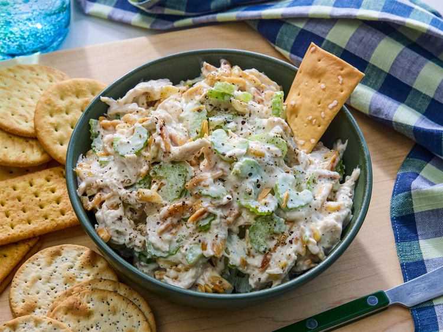

Best Chicken Salad
Home
This creamy chicken salad recipe is the best and a family favorite! I like to use leftover roast chicken or baked chicken breasts that have been sprinkled with basil or rosemary. Almonds and celery add a lovely crunch.
🕐 prep-time: 5 mins | 🔥 cook-time: 5 mins | 🍳 servings: 2

🥕 Ingredients
- ½ cup blanched slivered almonds
- ½ cup mayonnaise
- 1 tablespoon lemon juice
- ¼ teaspoon ground black pepper
- 2 cups chopped, cooked chicken meat
- 1 rib celery, chopped
🍳 Directions
- Gather all ingredients.
- Place almonds in a skillet over medium-low heat. Cook until golden brown and toasted, shaking frequently and watching carefully, as they burn easily.
- Mix mayonnaise, lemon juice, and pepper together in a medium bowl until combined.
- Add chicken, toasted almonds, and celery; toss until just combined.
- Enjoy!